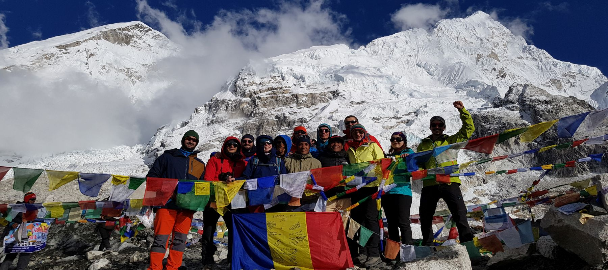

Descriere traseu

Traseul catre Everest Base Camp ocupa un loc special in inima mea. A fost prima drumetie de intensitate mare si m-a facut sa ma indrgostesc de muntii Himalaya. As recomanda aceasta experienta tuturor oamenilor care sunt in cautare de adrenalina la cote maxime.
In plus, peisajele grandioase iti vor taia cu adevarat respiratia.
Poti face traseul EBC fara nici un fel de ghid sau tur. Trebuie sa-ti cumperi permisele necesare si poti porni la drum. Traseul e unul sigur, foarte bine marcat. Potecile sunt largi, batatorite, si-n general pline de oameni care merg si vin. Asta nu inseamna ca vei merge non stop alaturi de hoarda de turisti, ci doar ca vei intalni destui pe drum, cei mai multi in apropierea satelor.
Nu e necesar sa iti iei ghid dar poti angaja un caraus care sa te ajute cu bagajul. Bineinteles nici acest lucru nu e necesar, dar daca ai nevoie si bugetul iti permite, angajeaza cu incredere un serpas. Sunt multi localnici pentru care acesta e singurul venit.
Sunt agentii de turism in Kathmandu sau Pokhara care iti pot asigura ghizi sau carausi pe toata durata traseului. Daca pornesti increzator si ti se ingreuneaza bagajul, te simti rau, sau alte cauze, poti gasi carausi, in general, in oricare sat de pe drum.
Oricum, tine cont ca EBC nu e nicidecum o plimbare in parc. E un traseu greu, obositor, dar nu imposibil de facut. Vei urca pana la peste 5000 de metri iar raul de altitudine e o problema serioasa, care te poate slabi sau chiar forta sa abandonezi urcarea, indiferent cat esti de in forma.
Experienta mea
Am plecat din Bucuresti un grup de 11 prieteni. De fapt 10, deaorece cu a 11 persoana ne-am intalnit in Lukla.
Am angajat 3 serpasi si bagajele ne-au fost carate de catre yaki(animale superbe din Nepal). Traseul dus-intors a durat 14 zile. Nu a fost nici foarte greu, dar nici usor. Eu am racit din a doua zi si in a 4 zi mi-am luxat glezna. Cu toate astea puterea psihica m-a facut sa merg mai departe.
Toti 11 am reusit sa ajungem la destinatie. Durerile de cap din ultimele 2 zile au fost cel mai greu de digerat. Lipsa de oxigen si-a spus cuvantul. Singurul care nu a urcat pana la 5364m a fost un serpas tanar, caruia i s-a facut rau in ultima noapte si a trebuit sa coboare.
Per total, a meritat din plin aceasta experienta. As repeta-o de 100 de ori daca m-ar tine buzunarele si as avea mai mult timp liber.
 Cel mai periculos aeroport din lume
Cel mai periculos aeroport din lume